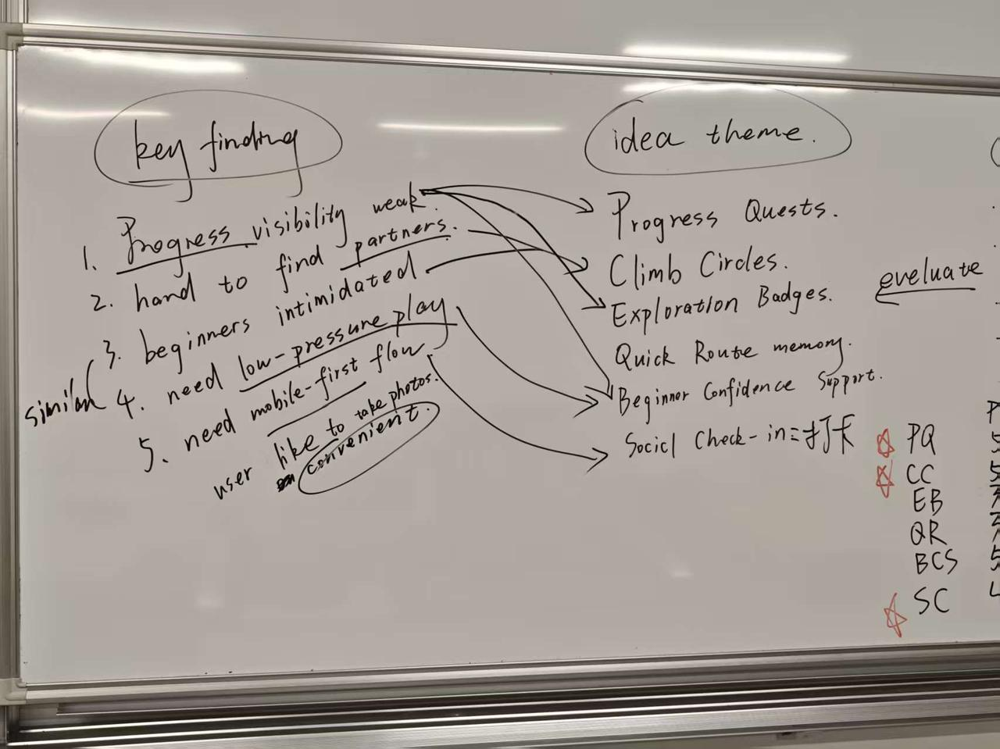
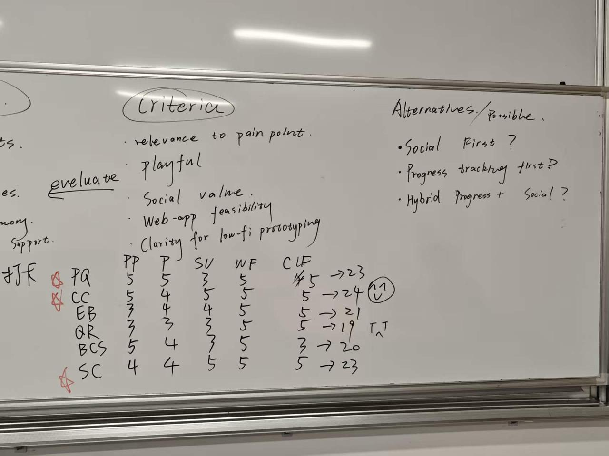
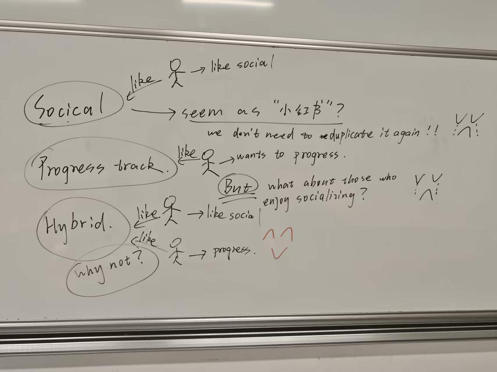

Biaolong Xie
Research synthesis, product framing, and content polishing.
Our project is a playful web-based climbing community experience that helps climbers discover routes, record progress, and stay socially motivated.
Each member contributed to a different layer of the project, from research and UX analysis to web implementation, visual identity, and evaluation documentation.
Research synthesis, product framing, and content polishing.

Web implementation, page structure, and interface refinement.

Persona development, journey mapping, and feature planning.

Visual identity, poster support, and user testing documentation.
Developed under the Active Lifestyles / Go Climbers track, Rockbond focuses on beginner-to-intermediate climbers whose climbing experience is often split across memory, generic apps, and in-person coordination.
Climbing is a strong human-centred design context because it combines physical activity, visible skill progression, social participation, and personal motivation. The current experience is often split across memory, generic apps, and in-person coordination.
The main users are student climbers, beginners, and socially motivated climbers. They struggle to see progress, remember routes, find partners or events, and stay motivated between sessions.
Rockbond helps users log sessions, remember saved projects, view progress, discover gyms or events, and connect through lightweight community features.
The design responds to different needs: beginners need confidence and accessible entry points, while regular climbers need continuity, momentum, and climbing-specific tracking.
Progress quests, climb circles, and discovery badges make climbing more engaging while keeping the experience supportive, low-pressure, and suitable for everyday users.
Our research connects the Active Lifestyles / Go Climbers track with motivation, self-efficacy, social participation, and the gap between current climbing tools and everyday student climbers' needs.
We selected the Active Lifestyles / Go Climbers track because climbing is more than a physical activity. For student users, it sits between fitness, leisure, personal progression, and social participation.
Climbing already contains challenge, exploration, mastery, and peer recognition, making it a strong fit for playful mobile interaction. At the same time, current experiences are fragmented across memory, disconnected tools, and in-person coordination.
Our design opportunity asks how Rockbond can make progress more visible, support motivation between sessions, and strengthen social connectedness for beginner-to-intermediate student climbers.
This research question is developed further in the ideation stage, where the opportunity is translated into alternative concepts and selected features.
The literature shows that climbing participation is linked to motivation, leisure satisfaction, and physical self-efficacy. Digital support should therefore help users feel that participation is worthwhile, not just record isolated sessions.
Fitness-app research also suggests that social features and gamification can increase engagement, but comparison-based systems need careful framing so they remain supportive rather than discouraging.
Climbing-specific apps such as KAYA and Vertical-Life are useful for logging, discovery, and climbing content. ClimbTime supports local gym coordination, while Strava is strong in challenges and social visibility.
However, these products rarely combine lightweight student-friendly progress tracking, climbing-native social connection, and playful motivation in one coherent mobile-first experience.
The academic and commercial review point to the same unmet need: climbers benefit from motivation, self-efficacy, social support, and meaningful progress visibility, but current tools often separate these needs.
Rockbond addresses this gap by focusing on gradual progression, social belonging, and playful motivation for everyday beginner-to-intermediate climbers rather than elite performance alone.
Rockbond is shaped around primary users who directly participate in climbing and secondary stakeholders who support learning, gym access, events, and community culture.
The stakeholder groups are divided into primary users who directly participate in climbing and secondary stakeholders who shape or support the climbing experience through learning, gym access, events, and community culture.
The primary stakeholders are student climbers, beginner climbers, and socially motivated climbers who need support with participation, improvement, and staying engaged with the climbing community.
These users benefit from a mobile-first system because they need low-friction access to information, lightweight progress tracking, and easy coordination with other climbers.
Secondary stakeholders include coaches, climbing gym staff, event organisers, and experienced climbers who shape route access, learning opportunities, newcomer onboarding, and community culture.
They are not the main users of the first prototype, but they can contribute content, organise activities, and help sustain the platform's social value.
"I want to feel that I'm getting better, even when I'm still not climbing very hard routes."

Linh started indoor bouldering recently after seeing friends post about it online. She enjoys climbing, but still feels uncertain about technique, gym etiquette, and how to judge whether she is improving.
"I want one place where I can track my climbing, stay psyched, and connect with people to climb with."

Ethan enjoys pushing to harder grades, but he is equally motivated by climbing with others, sharing beta, and discovering new sessions or events. He already uses general fitness and social apps, but none of them fully fit climbing.
The research process combined literature review, commercial product review, questionnaire design, and ethical planning to support personas, journey mapping, requirements, and later design decisions.
We used academic literature review, commercial product review, and questionnaire design for initial requirement validation. This sequence gave us an evidence base for motivation, stakeholders, personas, journey mapping, and requirements.
The logic chain was: research evidence -> preliminary insights -> personas -> journey map -> requirements. Literature helped identify themes around motivation, confidence, participation, and social support, while commercial review showed how existing products handle logging, community, and playful engagement.
Academic sources helped identify recurring themes around climbing motivation, self-efficacy, confidence, social support, and sustained participation.
Product review helped compare logging, route discovery, gym engagement, social visibility, and challenge-based features in current climbing and fitness apps.
The questionnaire was designed to test assumptions with student climbers and beginner-to-intermediate indoor climbers before finalising requirements.
Sample: 34 responses, including 24 university students, 6 recent graduates or young professionals, 2 gym staff, and 2 other participants.
Experience: 10 beginners, 9 occasional climbers, 11 regular climbers, and 4 experienced climbers. The main context was indoor bouldering.
The findings suggest that an effective climbing community app should prioritise clarity, continuity, and social accessibility over feature quantity.
Before conducting questionnaires, user discussions, and later usability testing, participants were informed about the purpose of the study, what participation involved, and how their responses would be used in the CPT208 portfolio and design process.
We used the course-provided Participant Information Sheet and Informed Consent Form as the basis for consent, and the module-level ethics approval letter confirmed that CPT208 research activities involving participants, survey respondents, or personal data had ethics approval.
To protect privacy, we avoided unnecessary sensitive or personally identifying information. Notes and feedback records were kept within private group files, participant names were removed or anonymised where appropriate, and no raw personal data was published.
The journey map connects research insights to later requirements by showing how motivation, progress visibility, and social connectedness change before, during, and between climbing sessions.
Scenario: A climber wants to keep improving, stay motivated, discover climbing opportunities, and feel connected to a climbing community.
B. Explanatory ParagraphThis journey map shows that the central problem is not limited to the climbing session itself. Instead, the experience breaks down across the transitions before, during, and between sessions. Users may enjoy climbing, yet still struggle to sustain participation because progress is hard to see, social opportunities are hard to discover, and motivation fades once the session ends. The most important themes revealed here are therefore motivation, progress visibility, and social connectedness. A successful system should not simply digitise logging; it should connect these moments into a more continuous experience.
C. Journey-to-Design LinkThe journey map directly informs the next-stage requirements. Pain points around fragmented planning suggest the need for partner-finding and event discovery. Pain points during and after climbing suggest the need for low-friction logging and clear progress summaries. Pain points between sessions suggest the need for playful motivational loops, such as milestones, streaks, or friendly challenges. Together, these opportunities create a strong bridge from journey analysis to concrete user, functional, and playful requirements.

The requirements translate journey-map pain points, persona needs, and product gaps into a focused mobile-first climbing companion for progress, memory, and community motivation.
The playful layer is designed to support self-efficacy, social motivation, and community discovery without relying on broad public competition.
Users receive a visual quest layer that transforms personal climbing goals into small achievable milestones, such as completing 3 routes above last week's comfort grade or returning to one saved project and improving attempt quality.
Why must-have: Directly supports progress visibility and self-efficacy.
Implementation value: Concrete and mobile-friendly.
Users can create or join small friend groups for time-limited challenges, such as 2 sessions this week, completing a beginner route set together, or sharing one beta tip.
Why must-have: Adds social motivation without relying on public leaderboards.
Implementation value: Strongly aligned with community needs.
Users unlock lightweight badges or map-style markers for exploration behaviours such as attending a new gym event, joining a beginner session, climbing with a new partner, or trying a new wall area.
Why must-have: Connects playfulness to community participation, not only performance.
Implementation value: Encourages broader engagement and discovery.
Each requirement is traceable to an evidence source from the research, product review, persona work, or journey analysis.
| Requirement | Rationale / evidence source |
|---|---|
| Quick climb / session logging | Product gap: many users still rely on photos or notes; personas show low-friction capture is essential; journey pain point appears after sessions. |
| Personal progress view | Literature on self-efficacy and motivation; beginner persona pain point; journey pain point during and after sessions. |
| Save projects and notes | Journey stage 2 and 4 show memory fragmentation; progression-oriented persona needs continuity. |
| Partner-finding / session coordination | Product review of ClimbTime; social support findings in fitness app literature; journey stage 1 and 6. |
| Event / opportunity discovery | Stakeholder and journey analysis show fragmented access to community participation; product gap across reviewed systems. |
| Friendly small-group challenges | Gamification literature supports activity engagement; product insight from Strava; avoids the downsides of broad public comparison. |
| Exploration / community badges | Supports discovery, belonging, and playful engagement without over-focusing on hard grades; addresses market gap. |
| Inclusive beginner-friendly framing | EDI climbing study and beginner persona both indicate intimidation and participation barriers matter. |
| Optional social visibility and comparison | Fitness-app literature shows social comparison can motivate, but effects vary; public competition can discourage some users. |
| Mobile-first interface | Directly aligned with course topic/device framing and real use context before, during, and after sessions. |
These requirements respond directly to the gaps identified earlier. Rather than designing a generic fitness app or a specialist climbing database, the system is positioned to support the everyday climbing journey through three linked values: clear progress, sustained motivation, and social connection. The playful layer is not treated as decoration; it is used as a mechanism for helping users participate more consistently and meaningfully.
The priority list keeps the prototype focused on the core climbing journey while leaving room for later expansion.
The ideation process used brainstorming, theme grouping, and selection criteria to move from broad opportunities into a focused set of concepts that match user pain points and mobile-first feasibility.
The brainstorming stage explored multiple routes from the same evidence base: progress visibility, session memory, social coordination, beginner confidence, and supportive playful motivation.


Each theme was checked against a concrete pain point and a playful requirement so that ideation stayed connected to the research rather than becoming feature decoration.
A lightweight quest system turns personal climbing goals into small, achievable session-based tasks that help users notice improvement over time.
Users join or create small circles with friends or partners to coordinate sessions, share updates, and complete friendly micro-challenges together.
The system rewards users for discovering beginner sessions, new gyms, events, or new climbing partners through map-style markers and community badges.
Users can quickly save routes, projects, photos, and short notes so that each climbing session connects to the next one without heavy manual tracking.
The system presents low-pressure prompts, beginner tags, supportive summaries, and small-wins feedback to reduce intimidation and help new climbers feel included.
After a session, users can post a lightweight check-in, share one achievement, or ask for route advice without needing a full social-media style feed.
The six initial plans were assessed against criteria that balance user relevance, inclusive playful experience, social value, mobile-first feasibility, and prototype clarity.
The Crazy Eights exercise translated the strongest ideation themes into fast screen concepts, helping us compare onboarding, progress, social coordination, discovery, logging, challenges, sharing, and achievement journeys.


Each sketch focused on a specific user moment and tested whether the idea could become a clear, mobile-first screen.
This sketch explores how onboarding could personalise the app for beginners, regular climbers, and socially motivated users from the first screen.
This sketch treats the home page as a simple progress centre that keeps users motivated between climbing sessions.
This sketch shows a low-pressure matching flow for users who want climbing partners without joining a large public feed.
This sketch explores how discovery features could connect community participation with playful exploration rewards.
This sketch focuses on fast post-climb logging so users can remember what they did without heavy manual input.
This sketch tests a friend-based challenge model that creates social motivation without relying on leaderboards.
This sketch explores a lighter community feed centred on useful updates and encouragement rather than performance broadcasting.
This sketch frames the profile as a personal climbing journey that combines progress, memory, and exploration rewards.
From the Crazy Eights sketches, we found that the most useful ideas were the ones that made progress easy to see, supported small-group social interaction, and encouraged users to discover new climbing opportunities. These directions matched our earlier research findings, especially the need for clearer session-to-session continuity, easier partner-finding, and playful but low-pressure motivation.
The sketching exercise also helped us narrow the scope for the next stage. Some ideas, such as quick logging, circles, challenges, and event discovery, were easier to turn into screens and user flows. Other ideas, such as a large public feed or more detailed analytics, felt less suitable for an initial prototype. Based on this, our low-fidelity prototype should focus on a hybrid direction that combines progress, community, and discovery in a simpler mobile-first flow.
The alternatives were developed from the ideation themes and Crazy Eights sketches, then compared against user needs, playful requirements, and mobile-first feasibility.
Concept: The system is primarily organised around helping users find climbing partners, join sessions, and stay socially connected, with progress tracking as a supporting feature.
Core interaction model: Users enter the app to discover who to climb with, what sessions are available, and what events are happening nearby. Social coordination is the main entry point.
Playfulness support: Supports Climb Circles and exploration badges well, but may underplay personal progress quests.
Technical feasibility: Moderate. Filtering, matching, and event views are feasible in low-fi and high-fi, but deeper social coordination logic may become more complex later.
Suitable user type: Best for beginners, socially motivated climbers, and users who mainly need community entry points.
Concept: The system is primarily structured around logging climbs, remembering projects, and visualising improvement over time, with social features layered around that core.
Core interaction model: Users come into the app mainly to log sessions, review progress, and receive supportive goal prompts or quests.
Playfulness support: Supports Session-to-Session Progress Quest strongly, but needs careful integration of circles and discovery to avoid feeling too private.
Technical feasibility: High. Logging, dashboard views, saved projects, and milestones are relatively clear to prototype as a web app.
Suitable user type: Best for regular climbers and users who already climb consistently but want better continuity and motivation.
Concept: The system combines a personal progress core with small-group social motivation and lightweight discovery features, balancing individual continuity with community participation.
Core interaction model: Users can quickly log sessions and see progress, but the app also surfaces circles, beginner sessions, events, partner-finding, and exploration rewards in connected ways.
Playfulness support: Strongest overall fit for progress quests, micro-challenges, and discovery badges together.
Technical feasibility: Moderate to high if scoped carefully. A focused MVP can implement the core flow without building every social feature in full detail.
Suitable user type: Best for a mixed target group including beginners, student climbers, and regular users who want both progress and social motivation.
The comparison shows why the hybrid model was kept, while the strongest parts of the other alternatives were combined into it.
| Alternative | Main concept | Best for | Strengths | Weaknesses | Playfulness | Feasibility | Keep / Drop / Combine |
|---|---|---|---|---|---|---|---|
| Social Matching First | Community entry through partner-finding and event discovery | Beginners, socially motivated climbers | Strong social value, welcoming entry, partner-focused | Progress becomes secondary | Medium-High | Moderate | Combine |
| Progress Tracking First | Personal logging, memory, and progress visibility | Regular climbers, self-improvement users | Clear need fit, easy to prototype, strong functional core | Can feel socially thin | Medium | High | Combine |
| Hybrid Progress + Community Motivation | Progress core with social circles and discovery | Mixed user group | Best overall alignment with findings and playful features | Needs tighter scoping | High | Moderate-High | Keep |
Based on the second-stage findings, the most suitable direction for the project is a hybrid model that combines progress tracking with low-pressure community motivation. The research does not support a purely social app or a purely individual tracking app. Instead, the findings repeatedly show that users want to keep improving, stay motivated between sessions, and feel socially connected without being pushed into overly competitive interaction. A hybrid direction therefore provides the best fit with the project's main pain points and must-have playful requirements.
In practice, this means the low-fidelity prototype should be built around a clear personal progress core, supported by small-group challenges, partner-finding, and community discovery. This direction is also realistic for implementation because the first prototype does not need to build every feature at full depth; it only needs to demonstrate a coherent user flow in which logging, progress feedback, and social motivation reinforce one another. For a student web-app project, this hybrid model offers the strongest balance between human-centred justification, playful interaction, and feasible development scope.

The low-fidelity and high-fidelity prototypes show how the selected hybrid concept moves from structure to a more polished mobile interaction flow.
Open the early structural prototype showing the core mobile flow, layout priorities, and main task sequence.
11. High-Fidelity PrototypeOpen the polished prototype showing refined visual design, clearer interaction states, and the final mobile experience.
[1] S. Y. Lee, S. M. Kim, R. S. Lee, and I. R. Park, "Effect of participation motivation in sports climbing on leisure satisfaction and physical self-efficacy," Behavioral Sciences, vol. 14, no. 1, p. 76, 2024.
[2] A. Mazeas, M. Duclos, B. Pereira, and A. Chalabaev, "Evaluating the effectiveness of gamification on physical activity: A systematic review and meta-analysis," JMIR Serious Games, vol. 10, no. 1, 2022.
[3] D. Wigfield et al., "A cross-sectional, survey-based study of equity, diversity, and inclusion in the Canadian indoor climbing community," Journal of Exercise and Sport Sciences, 2024.
[AI-1] ChatGPT, GPT-5.4 Thinking, accessed on 2026-04-15, available at https://chatgpt.com. Used to visualize persona and journey maps.